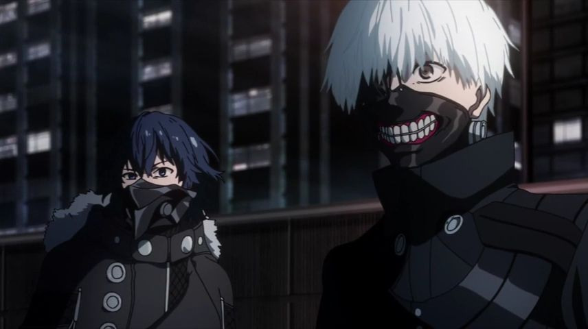

Disclaimer: This review covers the 2014 anime "Tokyo Ghoul" and its sequel season, 2015's "Tokyo Ghoul /A" (read as "root A," with the square root symbol).The hit "Tokyo Ghoul" franchise, told across manga, light novels, anime, films and games, wasn't quite the all-out global success it wanted to be, even though it had many of the right pieces. It's set in an alternate present day Japan, where "ghouls" are a part of everyday life. These "ghouls" are humans with the unsatiable desire to eat human flesh, like zombies, but more sentient. Born this way from birth, they pretend to live like humans to live among us, quietly seeking for and eating their prey at night. On the media, the public is fully aware of these murders, but unable to know who is friend or foe, they live their lives normally, with caution whenever a new murder appears on the news, and with a specialized task force assigned to investigate and kill off the threats.It's a common story archtype: "us" versus "them." But maybe "they" aren't as bad as we thought, and maybe we, the humans, are the real monsters after all. Poor Kaneki, a human college student, learns this the hard way, when he goes on a date with a cute young woman, who herself happens to be a ghoul with the intention to consume him as a midnight snack. Miraculously, a construction accident kills her and injures him, and to save his life, organs from her were implanted into Kaneki. Kaneki wakes up and discovers he can no longer stand the taste of normal food, but craves human: he's become a half-ghoul, with all the side-effects of the monster race he feared. From an outreached hand, he learns that while some ghouls do indeed hunt humans for prey or sport, most quietly control their hunger by eating corpses of the dead instead, and do their best to live a peaceful life. Kaneki begins working at a cafe secretly run by peaceful ghouls, themselves a group that helps other ghouls to live alongside humans, hoping for a day the two races can finally live together without fear. At first, it's a reasonably convincing and compelling premise, built on that standard archtype, but with a hint of gore in human cannibalism and a stylish gothic fashion-sense, complete with fashion-forward haircuts, eyeliner, black nailpaint and trendy clothing. You'd think the violence would be a little too gruesome to watch, but I was surprised to see how relatively tame it was, more like a slightly-more violent version of shonen shows like "Naruto" or "Bleach." Of course, that might be a sign of my own personal issues, having watched too much anime of all kinds by now. And I won't lie: the torture scenes that culminate in episode 12 the first season stood out, making me wince and look away, and should satisfy any sadist that was interested in that feature.Kaneki's journey to learn about ghouls and to accept himself as one is reasonable fun, with new explanations of "ghoul culture" broken up with fights with lives at stake, fights for justice for either ghouls or humans, and at times, just plain comedy. I was surprised at the amount of comedy in lively conversations, or at the ridiculousness of the extreme situtations, which helps make the series more mainstream than other anime can manage. Otherwise, the action scenes are exciting, albiet uninspired (each ghoul has a random power to go along with strength and speed, and the human task force use manufactored versions of the same powers, so everyone might as well be superheroes). Since ghouls can regenerate if they aren't devoured whole, there isn't a sense of danger at first, until tragedy strikes midway through the first season to get the ball moving. That mix of action, comedy, politics, and the threat of greater things to come made it feel not unlike the work of Go Nagai ("Devilman" in particular). All the while, strong cinematic direction keeps things entertaining. That's all regarding Season 1. But then there's Season 2: "Tokyo Ghoul /A," which subconciously has a weaker public reputation for being a "drastic departure." In truth, the issue stemmed a bit earlier, at the end of the 9th episode of Season 1: it quickly introduces the idea that we don't just have the human police, peaceful ghouls and murderous ghouls. There are not just one or two, but MULTIPLE organized factions among the ghouls, each preparing to rebell against the humans, or against other ghouls, or against Kaneki and the organs of the deceased female, herself an infamous ghoul in the city. Curiously, Season 1 ends in the middle of an escape for a captured Kaneki, and Season 2 picks up immediately at that point, with episode 1 feeling like the proper end-point for that first season... for that reason, it's impossible to fully break up the two seasons, as anyone who watches Season 1 will feel watching Season 2 to be necessary. Why exactly is Season 2 disliked? While I haven't read the original manga, my understanding from online forums is that "/A" deviates from the original story, with blessing from the original author. Aside from that lack of "purity," it also starts with Kaneki making a drastic decision that guides the rest of the story. That decision could be explained due to a last-minute realization (or due to the previously mentioned torture he was put through), but it's so drastic and out of the blue that it's almost unfathomable. And his reasoning doesn't get explained fully for a long time, trying a viewer's patience, and being unsatisfying when the weak arguement is confirmed without much further backing.But the real reason I personally had any issue with "/A" was with the sudden change in pacing and content. As established, we now focus on multiple new groups fighting for freedom, safety, and for as-of-yet-unspecified-but-subtly-hinted motivations. Beyond those introduced in those last few episodes, we get several more new characters, pushing the cast into the dozens, each on different sides, which can be difficult to track for anyone not paying close attention. Without knowing what the end-goals are, the story feels less important, often just a series of bureaucratic conversations inside the human task force as they wait for the next ghoul attack. Even if one does pay attention, decisions made by the entire cast struggle to make sense, as things rapidly progress without the room to fit it all in.The whole situation reminded me strongly of 2003's "Fullmetal Alchemist." Both are effectively shonen action shows, despite a potentially deep premise. "Alchemist" also had to deviate from the at-the-time-unfinished manga, focusing on side characters in police-like-positions that were far less interesting than the main cast. In fact, there are multiple elements of "Tokyo Ghoul" that reminded me of older, mid-2000's shonen anime, and not always in a good way. It can be frustrating, since "Ghoul's" beginning was relatively strong. The production values in "/A" also appear noticably worse.But despite the change in tone from "/A," I kept watching, always interested in where they were taking the story, whether or not I agreed with it. And the final climax, taking up the last three episodes, makes it worthwhile: animation is significantly better, fights are exciting, and a few main character arcs are dealt with (although some are only dealt with halfway, and there are several moments when I kept yelling "WHAT?!" or "WHY?!" or "HOW?!", even moreso than earlier in the second season). The production vaues for 'Tokyo Ghoul" is good, with solid animation (although the animation takes a slight decline in most of "/A" if you pay attention). The art style in particular stands out, thanks to a great modern fashion sense, beautiful ghoul powers, and some excellent visuals and illustrations in the opening and ending credits. The musical score is good, standout out the most with the opening song in the first season, "Unravel," which has become as popular among cover artists as the series is for cosplay. The English dub is solid, but as the cast grows larger, it grows more and more workmanlike. I'm willing to label "Tokyo Ghoul" as a good show, with only a slight decrease when including "/A." The faults stem from its desire to be widely-liked, making it too much like an average-shonen action anime rather than something new or innovative. You can't satisfy everyone's hunger.
- "Ani" More reviews can be found at : https://2danicritic.github.io/ Previous review: review_To_Love_Ru Next review: review_Tokyo_Godfathers